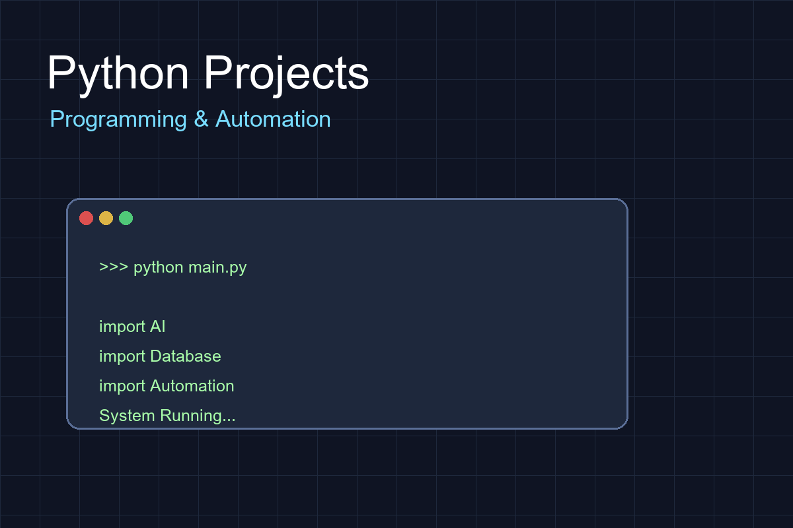

Overview
Python Projects is a collection of programming projects developed to improve software development skills. These projects focus on automation, data management, algorithms and practical programming applications.
Key Features
- Python Programming Practice
- Automation Tools
- Data Processing Applications
- File Management Systems
- Programming Experiments
Technology Stack
Python
Python Standard Library
Data Processing
Algorithm Design
Software Development
Development Journey
Learning Stage
Building programming fundamentals and understanding Python syntax.
Application Stage
Creating useful tools and small software projects.
Advanced Stage
Developing larger systems with better architecture and user experience.